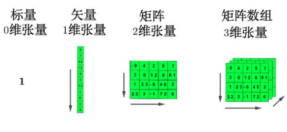
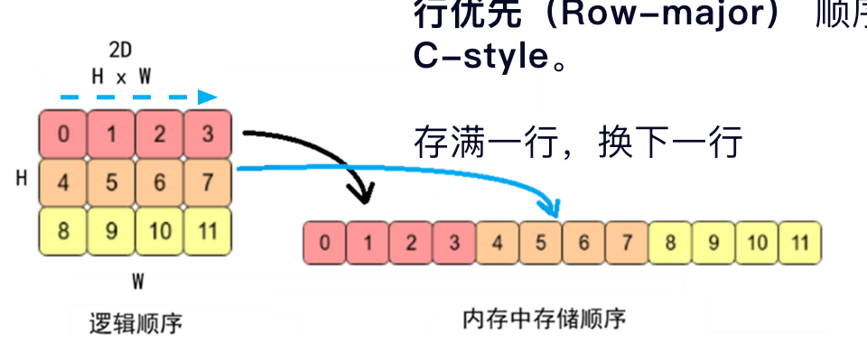
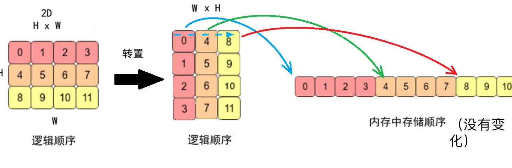
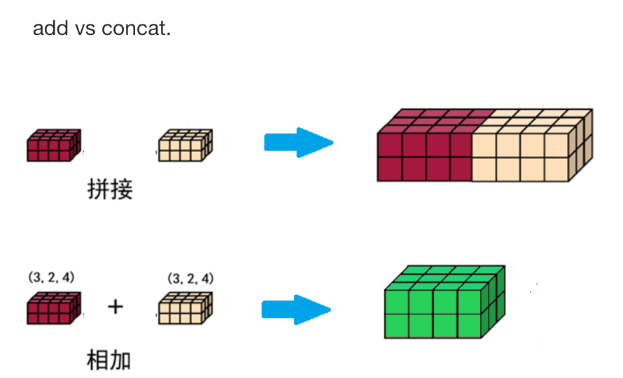
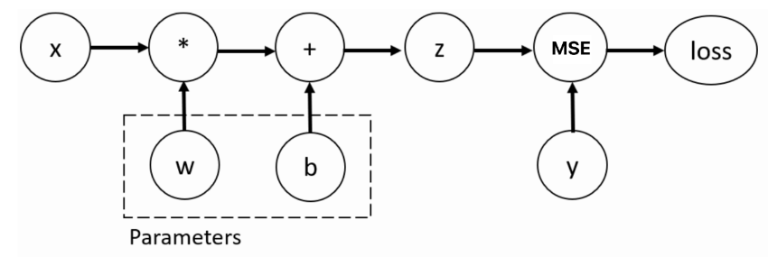
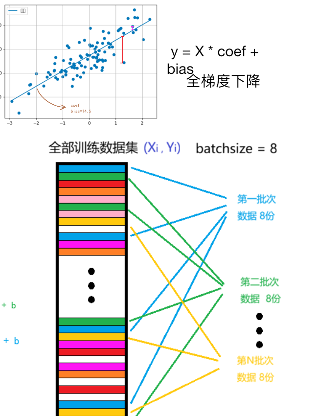

🔥 PyTorch 基础：张量、自动微分与训练
这一讲的目标不是背 API，而是建立一条完整主线：数据先变成张量，张量在指定设备上参与前向计算，自动微分得到梯度，优化器据此更新参数，Dataset 与 DataLoader 则负责稳定地送入一批批数据。
学完后，你应该能回答四个问题：
- 一个张量的
shape、dtype、device和requires_grad分别控制什么？ reshape、transpose、permute、cat、stack的语义为什么不能混用？loss.backward()到底计算了什么，为什么每轮都要清梯度？- 怎样把数据、模型、损失函数和优化器组织成一个正确的 mini-batch 训练循环？
一、PyTorch 在深度学习中的位置
PyTorch 是以 Python 为主要接口的深度学习框架。它以张量为统一的数据表示，提供自动微分、神经网络模块、优化器、数据加载和设备加速等能力，可用于计算机视觉、自然语言处理、语音、强化学习等任务。
1. 核心能力
| 能力 | 作用 |
|---|---|
| Tensor 张量 | 像 NumPy 数组一样存储和计算多维数据，并可放到加速设备上 |
torch.autograd |
根据前向计算图自动求导 |
torch.nn |
提供网络层、损失函数和模型容器 |
torch.optim |
根据梯度更新模型参数 |
torch.utils.data |
用 Dataset、DataLoader 组织训练数据 |
torchvision / torchaudio |
提供视觉、音频领域常用数据集、模型和变换工具 |
PyTorch 于 2016 年首次发布，早期优势是符合 Python 直觉的动态图：执行一次前向计算，就在运行时构建一次计算图，普通控制流和调试工具可以直接使用。2018 年的 1.0 版本进一步强化了生产部署能力。
动态图不等于不能优化。现代 PyTorch 可以在保持易写、易调试体验的同时，通过编译层捕获计算并进行算子融合、内存复用、并行调度，最终调用更底层的 C++、CUDA 或硬件指令。需要时可把 torch.compile(model) 视为训练正确之后的性能扩展，而不是入门阶段的必需步骤。
2. 安装与环境确认
先进入自己的虚拟环境，再按当前硬件和官方安装说明选择对应版本。只学习 CPU 基础时可先安装：
pip install torch torchvision
import torch print(torch.__version__) print("CUDA 是否可用：", torch.cuda.is_available())
不要仅凭“电脑有独立显卡”判断 CUDA 可用性；操作系统、驱动、显卡型号和 PyTorch 构建版本都必须匹配。
二、Tensor：深度学习的数据语言
张量可以理解为元素类型相同的多维数组。标量是 0 维张量，向量是 1 维张量，矩阵是 2 维张量；更高维张量常用来表示成批图像、序列或视频。

| 维数 | 常见称呼 | 深度学习中的典型含义 |
|---|---|---|
| 0D | 标量 | 一个损失值、一个学习率 |
| 1D | 向量 | 一个样本的特征、一个偏置向量 |
| 2D | 矩阵 | 样本数 × 特征数、线性层权重 |
| 3D | 三维张量 | 单张彩色图像 C × H × W、一批序列 |
| 4D | 四维张量 | 一批图像 N × C × H × W |
| 5D | 五维张量 | 一批视频 N × C × T × H × W |
维数只说明轴的数量，不自动说明业务含义。同为 (32, 3, 224, 224)，只有结合约定才能知道它表示 NCHW 图像。
1. 每个张量的四个关键属性
import torch x = torch.tensor([[1.0, 2.0], [3.0, 4.0]], requires_grad=True) print(x.shape) # torch.Size([2, 2]) print(x.dtype) # torch.float32 print(x.device) # 通常是 cpu print(x.requires_grad) # True
shape：每条轴有多长。dtype：每个元素用什么数值类型存储。device：数据位于 CPU、CUDA 等哪种设备。requires_grad：自动微分是否追踪与该张量有关的运算。
此外，x.ndim 是轴数，x.numel() 是元素总数，x.size() 与 x.shape 等价。
2. 从 Python、NumPy 和形状创建张量
import numpy as np import torch scalar = torch.tensor(3.14) vector = torch.tensor([1, 2, 3]) matrix = torch.tensor([[1, 2], [3, 4]], dtype=torch.float32) array = np.array([1.0, 2.0, 3.0]) from_array = torch.tensor(array) empty = torch.empty(2, 3) # 只分配内存，不初始化内容
torch.tensor(data) 适合从现有数据构造张量；torch.empty(shape) 适合只分配内存。旧代码里常见的 torch.Tensor(2, 3) 也会创建未初始化的浮点张量，但语义容易与“从数据构造”混淆，新代码更推荐明确使用 torch.tensor 或 torch.empty。
torch.FloatTensor、DoubleTensor、HalfTensor、ShortTensor、IntTensor、LongTensor 等类型构造器仍可能出现在旧代码中，现代代码通常统一写成 dtype=torch.float32、dtype=torch.int64，可读性更高，也更方便迁移设备。
3. 常见数据类型与范围
| PyTorch 类型 | 位数 | 典型范围或用途 |
|---|---|---|
torch.uint8 |
8 | 0～255，常见于原始图像像素 |
torch.int8 |
8 | -128～127，量化模型常见 |
torch.int16 / short |
16 | -32768～32767 |
torch.int32 / int |
32 | 普通整数 |
torch.int64 / long |
64 | 类别标签、索引的常见类型 |
torch.float16 / half |
16 | 混合精度训练、节省显存 |
torch.float32 / float |
32 | 模型参数与计算的常用默认类型 |
torch.float64 / double |
64 | 更高数值精度，但更占内存、计算更慢 |
Python 浮点列表构造的张量通常是 float32；NumPy 浮点数组通常是 float64，转换时会保留 NumPy 的类型。把 NumPy 数据交给默认 float32 模型前，要主动统一类型。
整数类型有固定范围，超出范围会发生溢出或转换错误，不能把 uint8 当成“更省内存但行为完全相同”的普通整数：
import torch pixels = torch.tensor([0, 127, 255], dtype=torch.uint8) labels = torch.tensor([0, 1, 2], dtype=torch.long) features = pixels.float() / 255 print(pixels.dtype, labels.dtype, features.dtype)
4. 等差数列、随机张量与常量张量
import torch # 左闭右开：[0, 2, 4, 6, 8] a = torch.arange(0, 10, 2) # 包含首尾，第三个参数是点的数量 b = torch.linspace(0, 1, steps=5) u = torch.rand(2, 3) # [0, 1) 均匀分布 n = torch.randn(2, 3) # 标准正态分布 N(0, 1) i = torch.randint(2, 10, (2, 3)) # 整数范围 [2, 10) z = torch.zeros(2, 3) o = torch.ones(2, 3) f = torch.full((2, 3), 7) print(torch.zeros_like(f)) print(torch.ones_like(f)) print(torch.full_like(f, 9))
randn 产生的随机噪声既可用于一维信号扰动，也可加到图像上做噪声模拟或数据增强。真实训练中必须结合数据尺度控制噪声强度。
5. 随机种子与可复现性
import torch print("当前初始种子：", torch.initial_seed()) torch.manual_seed(42) x1 = torch.randn(3) torch.manual_seed(42) x2 = torch.randn(3) print(torch.equal(x1, x2)) # True
固定种子能让相同环境中的随机序列更容易复现，但并不保证所有硬件、所有算子和所有版本之间逐位一致。严格实验还要固定数据划分、DataLoader 随机性和相关算法配置。
6. 类型转换
import torch x = torch.tensor([1.9, -1.9, 3.2]) print(x.to(dtype=torch.float64)) print(x.type(torch.float16)) print(x.half(), x.float(), x.double()) print(x.short(), x.int(), x.long())
浮点数转整数采用向零截断：1.9 → 1，-1.9 → -1，不是统一向下取整。若想显式向下、向上或四舍五入，应先使用 floor、ceil 或 round。
三、CPU、GPU 与 NumPy 之间的数据流
典型数据流是：磁盘文件 → CPU 内存中的 NumPy/图片 → PyTorch 张量 → 计算设备 → 模型；结果显示或交给 NumPy 时再回到 CPU。
1. 统一管理设备
import torch device = torch.device("cuda" if torch.cuda.is_available() else "cpu") x = torch.randn(2, 3) x = x.to(device) y = torch.ones(2, 3, device=device) print(x.device, y.device)
参与同一次运算的张量和模型参数必须位于兼容设备。最常见错误是模型已经 .to("cuda")，输入却仍在 CPU。
2. NumPy 与 Tensor 的三种关系
import numpy as np import torch arr = np.array([1.0, 2.0, 3.0], dtype=np.float32) shared = torch.from_numpy(arr) # 与 arr 共享 CPU 内存 copied = torch.tensor(arr) # 复制数据，不共享 arr[0] = 99 print(shared[0].item()) # 99 print(copied[0].item()) # 1 back_to_numpy = shared.numpy() # CPU 且不需梯度时可直接转换，也共享内存 independent = shared.numpy().copy()
| 写法 | 是否通常共享内存 | 关键限制 |
|---|---|---|
torch.from_numpy(arr) |
是 | 只能从 CPU NumPy 数组出发 |
torch.tensor(arr) |
否 | 会复制，适合需要隔离修改的场景 |
tensor.numpy() |
是 | 张量必须在 CPU，且不能处于需要梯度的状态 |
tensor.clone() |
否 | 复制张量数据，仍可保留梯度关系 |
tensor.detach() |
是 | 与计算图断开，但通常仍共享底层存储 |
因此，“断开梯度”和“复制数据”是两个不同操作。要同时做到两件事，应写 tensor.detach().clone()。
模型输出转 NumPy 的稳妥模板是：
result = output.detach().cpu().numpy()
若图像张量采用 C × H × W，而绘图库需要 H × W × C，还要重排轴：
image_array = image_tensor.detach().cpu().permute(1, 2, 0).numpy()
tensor.item() 只适用于单元素张量，常用于把标量损失变成普通 Python 数字：
loss_value = torch.tensor(0.125).item()
四、张量运算：逐元素、矩阵与统计
1. 基本算术与原地操作
import torch x = torch.tensor([1.0, 2.0, 3.0]) y = torch.tensor([4.0, 5.0, 6.0]) print(x + y, torch.add(x, y)) print(x - y, torch.sub(x, y)) print(x * y, torch.mul(x, y)) print(x / y, torch.div(x, y)) print(-x, torch.neg(x)) print(x % 2, torch.remainder(x, 2))
函数名末尾带下划线通常表示原地修改，例如 x.add_(1)、x.zero_()。原地操作能减少部分临时内存，但会改变原对象，且可能破坏自动微分所需的中间值；入门时优先使用非原地写法。
2. Hadamard 乘法与矩阵乘法
import torch a = torch.tensor([[1.0, 2.0], [3.0, 4.0]]) b = torch.tensor([[5.0, 6.0], [7.0, 8.0]]) elementwise = a * b # 对应位置相乘 matrix_product = a @ b # 矩阵乘法 same_result = torch.matmul(a, b) print(elementwise) print(matrix_product) print(torch.equal(matrix_product, same_result))
对二维矩阵，(m, n) @ (n, p) → (m, p)。对高维张量，matmul 把最后两维当矩阵维度，前面的维度视为批次维，并允许可兼容的广播。
逐元素运算也支持广播，例如 (3, 1) + (1, 4) → (3, 4)。广播从末尾维度向前比较：对应维度相等，或其中一个为 1，才可扩展。
3. 数学函数与规约
import torch x = torch.tensor([[1.0, 2.0], [3.0, 4.0]]) print(x.sum()) print(x.sum(dim=0)) # 沿第 0 维规约，得到各列之和 print(x.mean(dim=1)) # 沿第 1 维规约，得到各行均值 print(x.max(), x.min()) print(torch.sqrt(x)) print(torch.pow(x, 2)) print(torch.exp(x)) print(torch.log(x), torch.log2(x), torch.log10(x))
sum 可直接处理整数张量；mean、var、std 通常要求浮点或复数输入，因此整数数据要先 .float()。
4. 方差与标准差的校正参数
import torch x = torch.tensor([1.0, 2.0, 3.0, 4.0]) population_var = x.var(correction=0) # 分母 n sample_var = x.var(correction=1) # 分母 n - 1 population_std = x.std(correction=0) sample_std = x.std(correction=1)
总体统计用 correction=0，样本无偏估计常用 correction=1。不要只记默认值，要根据问题含义选择。
5. round 的边界行为
PyTorch 的 round 对恰好位于中点的数采用 ties-to-even，也叫“银行家舍入”，把结果舍入到最近的偶数，而不是一律“五入”：
import torch x = torch.tensor([0.5, 1.5, 2.5, 3.5, -0.5, -1.5]) print(torch.round(x)) # 0, 2, 2, 4, -0, -2
五、逻辑形状、物理存储与连续性
一个张量同时有“看起来如何排列”的逻辑视图，以及“元素怎样躺在内存里”的物理布局。默认二维张量通常按行优先（C-style）连续存储：先放完第一行，再放第二行。

转置往往只改变 shape 和 stride，不搬动底层数据，所以转置后的逻辑顺序变了，物理存储顺序仍可能保持原样。

import torch x = torch.arange(12).reshape(3, 4) y = x.transpose(0, 1) print(x.shape, x.stride(), x.is_contiguous()) print(y.shape, y.stride(), y.is_contiguous()) z = y.contiguous() print(z.is_contiguous())
stride表示沿某个轴前进一步时，底层存储位置要跨过多少元素。transpose、permute通常返回视图，共享原存储。view要求形状与现有 stride 兼容；对典型非连续转置结果直接view会报错。contiguous()在需要时复制并重排数据；本来连续时通常直接返回等价张量。reshape和flatten会尽量返回视图，必要时也可能复制，所以不要依赖它们一定共享内存。
连续布局常更符合底层算子的访问模式，因此可能更快，也被部分 API 所要求。但不要为了“连续”到处无条件复制；在明确遇到布局要求或性能瓶颈时处理。
六、索引与切片
先构造一个便于观察的矩阵：
import torch a = torch.arange(12).reshape(3, 4) print(a) # tensor([[ 0, 1, 2, 3], # [ 4, 5, 6, 7], # [ 8, 9, 10, 11]])
1. 基础索引与切片
print(a[1]) # 第 1 行 print(a[1, 2]) # 第 1 行第 2 列：6 print(a[:2]) # 前两行 print(a[:, :2]) # 前两列 print(a[:, ::2]) # 第 0、2 列，即偶数位置的列
PyTorch 张量切片不支持负步长，因此 a[::-1] 会报错；反转应使用 torch.flip(a, dims=[0])。
2. 高级索引：配对选择与笛卡尔选择
# 配对选择坐标 (0, 1) 和 (1, 2) points = a[[0, 1], [1, 2]] print(points) # tensor([1, 6]) # 选择第 0、1 行与第 1、2 列形成的 2×2 子矩阵 rows = torch.tensor([0, 1])[:, None] cols = torch.tensor([1, 2]) block = a[rows, cols] print(block) # tensor([[1, 2], # [5, 6]])
两个一维索引数组会按位置配对，不会自动产生所有行列组合。要获得子矩阵，可以像上面一样把行索引变成列形，也可以使用 index_select 等接口。
3. 布尔索引
# 根据第 0 列筛选整行 rows_kept = a[a[:, 0] >= 4] # 根据第 0 行的奇偶性筛选整列 cols_kept = a[:, a[0] % 2 == 0] print(rows_kept) print(cols_kept)
布尔掩码的形状必须与它所筛选的轴或元素集合匹配。
4. 三维张量按轴索引
x3 = torch.arange(24).reshape(2, 3, 4) first_block = x3[0, :, :] # 固定第 0 轴 first_row_each = x3[:, 0, :] # 固定第 1 轴 first_col_each = x3[:, :, 0] # 固定第 2 轴
理解方法是：每写一个整数索引，就固定并消去一条轴；每写一个 :，就保留该轴。
七、形状变换与轴变换
1. reshape、flatten 与 -1
import torch x = torch.arange(24).reshape(2, 3, 4) y = x.reshape(6, 4) z = x.reshape(2, -1) # 自动推断为 (2, 12) flat = x.flatten() # 一维，共 24 个元素 print(y.shape, z.shape, flat.shape)
这类变换不能改变元素总数。-1 只能出现一次，由其他维度和总元素数自动推断。
2. squeeze 与 unsqueeze
x = torch.randn(1, 3, 1, 4) print(x.squeeze().shape) # (3, 4)，移除全部长度为 1 的轴 print(x.squeeze(0).shape) # (3, 1, 4)，只尝试移除第 0 轴 print(x.unsqueeze(0).shape) # (1, 1, 3, 1, 4)，新增一条轴
模型需要 batch 维时，经常用 unsqueeze(0) 把单个样本变成大小为 1 的批次。
3. transpose 与 permute
image = torch.randn(3, 224, 320) # C, H, W swap_hw = image.transpose(1, 2) # C, W, H，只交换两条轴 hwc = image.permute(1, 2, 0) # H, W, C，任意重排全部轴
transpose(dim0, dim1) 只交换两条轴；permute(dims) 给出所有轴的新顺序。二者与 reshape 的语义完全不同：前者重排轴，后者只重新解释连续元素。如果把 C × H × W 图像误用 reshape(H, W, C)，像素与通道关系会被打乱。
4. 与 NumPy 的常见对应关系
| PyTorch | NumPy | 说明 |
|---|---|---|
x.reshape(...) |
np.reshape(x, ...) |
改变形状 |
x.squeeze(dim) |
np.squeeze(x, axis=...) |
移除长度为 1 的轴 |
x.unsqueeze(dim) |
np.expand_dims(x, axis=...) |
新增轴 |
x.transpose(d0, d1) |
np.swapaxes(x, d0, d1) |
只交换两轴时更对应 |
x.permute(order) |
np.transpose(x, axes=order) |
任意轴重排 |
torch.cat(xs, dim=d) |
np.concatenate(xs, axis=d) |
沿已有轴连接 |
torch.stack(xs, dim=d) |
np.stack(xs, axis=d) |
新增轴后堆叠 |
NumPy 的 .T 和 np.transpose 接口习惯与 PyTorch 不完全相同，迁移代码时应检查轴顺序，不要只按函数名机械替换。
八、拼接、堆叠、翻转与分块
1. cat 与 stack
import torch a = torch.ones(2, 3) b = torch.zeros(2, 3) cat_rows = torch.cat([a, b], dim=0) # (4, 3) cat_cols = torch.concat([a, b], dim=1) # (2, 6)，concat 是 cat 的别名 stack_front = torch.stack([a, b], dim=0) # (2, 2, 3) stack_last = torch.stack([a, b], dim=2) # (2, 3, 2)
cat不增加维数；除连接轴外，其余维度必须相等。stack先增加一条新轴；所有输入张量形状必须完全相同。- 两者都会生成新的输出存储，不与输入直接共享底层数据。
2. 特征相加与特征拼接

| 融合方式 | 输出形状 | 优点 | 代价 |
|---|---|---|---|
a + b |
与输入相同 | 维度和计算量较小，适合残差连接 | 两路信息在同一坐标上混合，来源不再显式分开 |
cat([a, b], dim=...) |
连接轴变长 | 保留两路特征的独立通道，表达容量更大 | 后续层参数量、显存和计算量通常增加 |
两种方式没有绝对优劣，必须结合网络结构和张量形状选择。
3. 翻转、旋转与分块
import torch x = torch.arange(12).reshape(3, 4) flip_rows = torch.flip(x, dims=[0]) flip_cols = torch.flip(x, dims=[1]) rotated = torch.rot90(x, k=1, dims=[0, 1]) parts = torch.chunk(torch.arange(11), chunks=6) print([part.numel() for part in parts])
rot90 的 k 表示旋转 90° 的次数，dims 指定旋转平面。chunk 尽量把指定轴切成若干近似大小的块，但可能返回少于请求数量的块；如果业务要求恰好得到固定数量，使用 torch.tensor_split 更明确。
九、自动微分：从前向计算到参数梯度
训练的核心更新式是：
[ W_{\text{new}} = W_{\text{old}} - \eta\,\nabla_W L ]
其中 (L) 是损失，(\nabla_W L) 是损失对参数的梯度，(\eta) 是学习率。PyTorch 的 torch.autograd 会记录前向运算并沿计算图反向应用链式法则。

图中前向关系是 z = x @ w + b、loss = MSE(z, y)；反向传播从 loss 出发，依次把梯度传给 z、w 和 b。
1. 叶子张量、非叶子张量与 grad_fn
import torch w = torch.tensor(10.0, requires_grad=True) # 需要优化的叶子张量 y = 2 * w**2 # 运算结果是非叶子张量 print(w.is_leaf, w.grad_fn) # True, None print(y.is_leaf, y.grad_fn) # False, 有对应的反向函数 y.backward() print(w.grad) # 40
只有浮点或复数张量可以设置 requires_grad=True。叶子参数的梯度会保存在 .grad；非叶子中间结果默认不保留 .grad，若确实需要观察，可在反传前调用 retain_grad()。
2. 标量输出与向量—雅可比积
backward() 最自然的入口是标量损失：
x = torch.tensor([10.0, 20.0], requires_grad=True) y = 2 * x**2 loss = y.sum() loss.backward() print(x.grad) # tensor([40., 80.])
如果输出是向量，PyTorch 并非“不能求导”，而是需要知道如何组合各输出分量。下面传入全 1 向量，计算的是一个向量—雅可比积，结果与 y.sum().backward() 相同：
x = torch.tensor([10.0, 20.0], requires_grad=True) y = 2 * x**2 y.backward(torch.ones_like(y)) print(x.grad)
神经网络通常先用 sum、mean 或损失函数把一批预测规约成一个标量，再调用 backward()。
3. 梯度会累积
w = torch.tensor(2.0, requires_grad=True) (w**2).backward() print(w.grad) # 4 (w**2).backward() print(w.grad) # 8，而不是 4 w.grad.zero_()
梯度累积是设计行为，可用于梯度累积训练；普通训练每个 batch 前都要清梯度，通常调用 optimizer.zero_grad()。
同一张计算图完成一次反传后，中间缓存通常会释放。若必须对同一图再次反传才使用 retain_graph=True，不要把它当作常规写法。
4. 安全更新参数
手动梯度下降时，不希望“更新参数”本身被记入下一张计算图：
w = torch.tensor(10.0, requires_grad=True) learning_rate = 0.01 loss = 2 * w**2 loss.backward() with torch.no_grad(): w -= learning_rate * w.grad w.grad.zero_()
不要用 w.data 绕过自动微分；它可能悄悄破坏计算图一致性。实际模型训练优先交给优化器执行 optimizer.step()。
5. detach 的正确理解
x = torch.tensor([1.0, 2.0], requires_grad=True) y = x * 3 stopped = y.detach() # 不再追踪梯度，通常共享存储 independent = y.detach().clone() # 同时断图并复制数据
detach 只解决“是否继续求导”，不自动解决设备迁移和数据复制。把模型输出交给 NumPy 时常用 y.detach().cpu().numpy()。
6. 完整的矩阵自动微分例子
import torch from torch import nn x = torch.ones(2, 5) y = torch.zeros(2, 3) w = torch.randn(5, 3, requires_grad=True) b = torch.randn(3, requires_grad=True) z = torch.matmul(x, w) + b loss_fn = nn.MSELoss() loss = loss_fn(z, y) loss.backward() print("loss:", loss.item()) print("w.grad shape:", w.grad.shape) # (5, 3) print("b.grad shape:", b.grad.shape) # (3,)
偏置 b 能与 (2, 3) 的 z 相加，是因为广播把 (3,) 视为每个样本共享的一组偏置；反向时，各样本对偏置的贡献会正确汇总。
十、Dataset、DataLoader 与三种梯度下降
1. 全批量、随机与小批量
| 方式 | 每次更新使用的数据 | 特点 |
|---|---|---|
| 全批量梯度下降 | 全部训练集 | 梯度稳定，但单次更新慢、占用内存大 |
| 随机梯度下降 | 1 个样本 | 更新频繁、噪声大，硬件利用率通常不高 |
| Mini-batch 梯度下降 | 一小批样本 | 在稳定性、速度和并行效率间折中，是最常用方式 |

- batch：一次前向和反向使用的一批数据。
- batch size：每批样本数。
- epoch：整个训练集被完整遍历一次。
- 一轮中的 batch 数约为
ceil(样本数 / batch_size)；若drop_last=True，最后不足一批的数据会丢弃。
2. Dataset 定义样本，DataLoader 组织批次
import torch from torch.utils.data import Dataset, DataLoader class PairDataset(Dataset): def __init__(self, x, y): self.x = x self.y = y def __len__(self): return len(self.x) def __getitem__(self, index): return self.x[index], self.y[index] x = torch.arange(20, dtype=torch.float32).reshape(10, 2) y = torch.arange(10, dtype=torch.float32).reshape(10, 1) dataset = PairDataset(x, y) loader = DataLoader( dataset, batch_size=4, shuffle=True, num_workers=0, drop_last=False, ) for batch_x, batch_y in loader: print(batch_x.shape, batch_y.shape)
Dataset 负责“第 i 个样本是什么”，也可以放预处理和数据增强逻辑；训练集、验证集、测试集通常分别创建。DataLoader 负责打乱、分批和多进程读取：
- 训练集通常
shuffle=True，验证和测试通常不打乱。 batch_size受显存、数据尺寸和优化效果共同影响。num_workers=0最容易调试；数据读取成为瓶颈后再逐步增加。drop_last=True可保证每批形状一致，但会丢掉最后不足一批的样本。- 已经在内存中的成对张量可直接使用
TensorDataset(x, y)。
3. “2244”训练骨架
可以用下面的结构记忆最小训练程序：
- 2 个对象：
Dataset、DataLoader。 - 2 层循环：外层
epoch，内层batch。 - 4 个定义：模型、损失函数、优化器、学习率。
- 4 个动作：清梯度、前向与计算损失、反向传播、参数更新。
for epoch in range(num_epochs): for batch_x, batch_y in train_loader: optimizer.zero_grad() prediction = model(batch_x) loss = loss_fn(prediction, batch_y) loss.backward() optimizer.step()
如果使用学习率调度器，通常在合适的时机额外调用 scheduler.step()；它不是替代 optimizer.step()。
十一、完整案例：用 PyTorch 拟合一元线性回归
任务设定为：
[ y = x \cdot \text{coef} + \text{bias} + \text{noise} ]
训练过程严格分四步：准备数据 → 定义模型 → 定义损失与优化器 → 迭代训练。
1. 一段可直接运行的完整代码
import matplotlib.pyplot as plt import torch from sklearn.datasets import make_regression from torch import nn from torch.utils.data import DataLoader, TensorDataset # 1. 生成并整理数据 x_np, y_np, true_coef = make_regression( n_samples=120, n_features=1, noise=10.0, bias=14.5, coef=True, random_state=42, ) # sklearn / NumPy 常得到 float64；模型默认 float32，因此显式统一类型 x = torch.tensor(x_np, dtype=torch.float32) y = torch.tensor(y_np, dtype=torch.float32).reshape(-1, 1) dataset = TensorDataset(x, y) generator = torch.Generator().manual_seed(42) train_loader = DataLoader( dataset, batch_size=8, shuffle=True, drop_last=False, generator=generator, ) # 2. 定义设备与线性模型 y_hat = xw + b device = torch.device("cuda" if torch.cuda.is_available() else "cpu") model = nn.Linear(in_features=1, out_features=1).to(device) # 3. 定义均方误差、学习率和 SGD 优化器 loss_fn = nn.MSELoss() learning_rate = 0.05 optimizer = torch.optim.SGD(model.parameters(), lr=learning_rate) # 4. Mini-batch 训练 num_epochs = 200 history = [] for epoch in range(num_epochs): model.train() total_loss = 0.0 sample_count = 0 for batch_x, batch_y in train_loader: batch_x = batch_x.to(device) batch_y = batch_y.to(device) optimizer.zero_grad() prediction = model(batch_x) loss = loss_fn(prediction, batch_y) loss.backward() optimizer.step() batch_size = batch_x.size(0) total_loss += loss.item() * batch_size sample_count += batch_size epoch_loss = total_loss / sample_count history.append(epoch_loss) if (epoch + 1) % 50 == 0: print(f"epoch={epoch + 1:03d}, loss={epoch_loss:.4f}") # 5. 查看参数并做推理 learned_weight = model.weight.detach().cpu().item() learned_bias = model.bias.detach().cpu().item() print("真实系数：", float(true_coef)) print("学习系数：", learned_weight) print("学习偏置：", learned_bias) model.eval() with torch.no_grad(): fitted = model(x.to(device)).cpu().numpy().ravel() # 6. 可视化损失和拟合结果 order = x_np[:, 0].argsort() fig, axes = plt.subplots(1, 2, figsize=(10, 4)) axes[0].plot(history) axes[0].set(title="Training loss", xlabel="Epoch", ylabel="MSE") axes[1].scatter(x_np[:, 0], y_np, s=16, alpha=0.7, label="data") axes[1].plot(x_np[order, 0], fitted[order], color="red", label="fitted") axes[1].legend() plt.tight_layout() plt.show()
2. 为什么这样统计 epoch loss
每个 batch 的 MSELoss 默认已经对本批样本取平均。最后一批可能比其他批小，因此简单平均各批 loss 会让小批次权重过大。代码先用 loss.item() * batch_size 恢复该批总贡献，最后除以实际样本数，才是更准确的整轮平均。
total_loss 和 sample_count 必须在每个 epoch 开始时清零，否则记录的是从训练开始累计到当前的混合值，不再代表本轮损失。
3. 模型模式、验证与保存
model.train()：进入训练模式；会影响 Dropout、BatchNorm 等层。model.eval()：进入评估模式，但它不会自动关闭梯度。- 推理通常同时使用
model.eval()与torch.no_grad()。 - 验证集只做前向和指标统计，不能调用
optimizer.step()。
推荐只保存参数状态：
torch.save(model.state_dict(), "linear_regression.pt") restored = nn.Linear(1, 1).to(device) state = torch.load( "linear_regression.pt", map_location=device, weights_only=True, ) restored.load_state_dict(state) restored.eval()
学习率调度器示例：
scheduler = torch.optim.lr_scheduler.StepLR( optimizer, step_size=50, gamma=0.5, ) # 通常在每个 epoch 完成后调用一次 scheduler.step()
调度器的调用频率必须符合其定义；有些按 epoch，有些按 batch，有些根据验证指标更新。
十二、最容易踩的坑
| 现象 | 根因 | 正确处理 |
|---|---|---|
mat1 and mat2 must have the same dtype |
数据是 float64，模型是 float32 |
数据转成 .float()，或统一模型与数据类型 |
Expected all tensors to be on the same device |
输入、标签、模型不在同一设备 | 统一 .to(device) |
直接对需梯度张量调用 .numpy() 报错 |
NumPy 不理解计算图 | .detach().cpu().numpy() |
| 第二轮梯度变大 | .grad 默认累积 |
每批先 optimizer.zero_grad() |
转置后 view 报错 |
stride 与目标视图不兼容 | reshape(...)，或先 .contiguous().view(...) |
图像 reshape(H, W, C) 后颜色错乱 |
把轴重排误写成形状重解释 | 使用 permute(1, 2, 0) |
a[::-1] 报负步长错误 |
PyTorch 切片不支持负步长 | torch.flip(a, dims=[0]) |
mean() 处理整数张量报错 |
均值输出需要浮点或复数 | x.float().mean() |
| 原地更新参数触发 autograd 错误 | 叶子参数被计算图追踪 | 用优化器，或放进 torch.no_grad() |
| 验证时结果不稳定 | 只关梯度，未切换评估模式 | model.eval() + torch.no_grad() |
chunk 数量少于请求值 |
chunk 不保证精确块数 |
必须精确时用 tensor_split |
十三、本讲 API 速查
| 任务 | 常用 API |
|---|---|
| 从数据创建 | torch.tensor、torch.from_numpy |
| 按形状创建 | empty、zeros、ones、full 及其 _like 版本 |
| 序列与随机数 | arange、linspace、rand、randn、randint |
| 类型与设备 | .to(dtype=..., device=...)、.float()、.long() |
| 基础运算 | add、sub、mul、div、matmul / @ |
| 统计 | sum、mean、max、min、var、std |
| 数学函数 | sqrt、pow、exp、log、round |
| 索引 | 切片、整数数组索引、布尔掩码 |
| 形状 | reshape、flatten、squeeze、unsqueeze |
| 轴与布局 | transpose、permute、contiguous、is_contiguous |
| 组合与变换 | cat、stack、flip、rot90、chunk |
| 自动微分 | requires_grad、backward、.grad、no_grad、detach |
| 模型训练 | nn.Linear、nn.MSELoss、optim.SGD |
| 数据管线 | Dataset、TensorDataset、DataLoader |
十四、本讲过关标准
不看资料完成下面这些动作，就算真正掌握了第一讲：
- 创建形状为
(32, 3, 224, 224)的随机张量，并说清每条轴的含义。 - 解释
torch.tensor(np_array)与torch.from_numpy(np_array)的内存关系。 - 用高级索引同时取出两个坐标，再取出两行两列形成的子矩阵。
- 把
C × H × W图像正确变成H × W × C，并解释为什么不能用reshape。 - 解释
*、@、cat、stack在形状和语义上的差异。 - 手算
y = 2w², w = 10的梯度，并用 autograd 验证结果为 40。 - 写出
zero_grad → forward → loss → backward → step的 mini-batch 训练循环。 - 在推理阶段正确组合
model.eval()、torch.no_grad()、.detach().cpu().numpy()。